The Dough Does Not Rise With Yeast...
Welcome to The Carrion Knead, the most ambitious and horrifying D&D 5E/PF2e module we have ever produced. Across 4 Tiers of play, your party will uncover the sinister truth behind Mother Gristle's famous Bone-Marrow Biscuits.
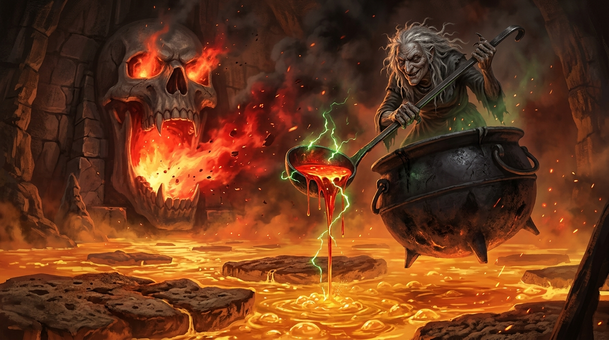
What's Inside?
- 300+ Pages of Grimdark Fantasy: Take your characters from level 1 to 20 across four massive interconnected volumes.
- Macabre Harvesting System: Butcher fallen foes and bake their essences into magical confections.
- Phased Boss Arenas: Battle colossal food entities like the Flesh-Dough Golem and the 30-foot fiendish giants of the Planar Crucible.
- Digital DM Cookbook PDF: Surprise your players at the table with real-world recipes matching the cursed items in-game, formatted as a gorgeous digital cookbook.
The VTT Integration & Digital Assets
Every tier includes access to over 60 high-resolution tactical battlemaps and top-down character tokens, formatted perfectly for FoundryVTT, Roll20, and Owlbear Rodeo. Say goodbye to scrambling for assets; we've built every dungeon, mill, and eldritch horror from the ground up.
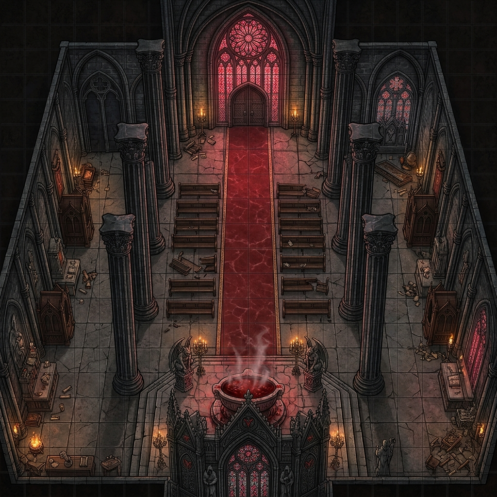
The Crimson Cathedral
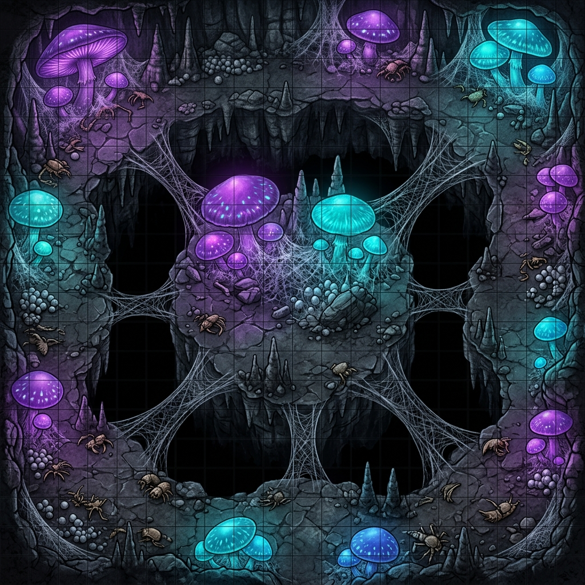
The Chitin Gardens
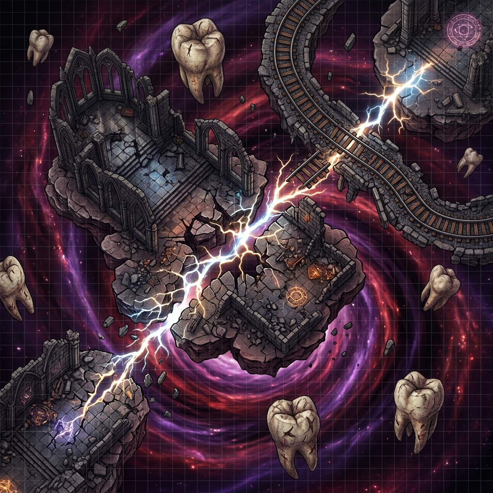
Gut of Reality
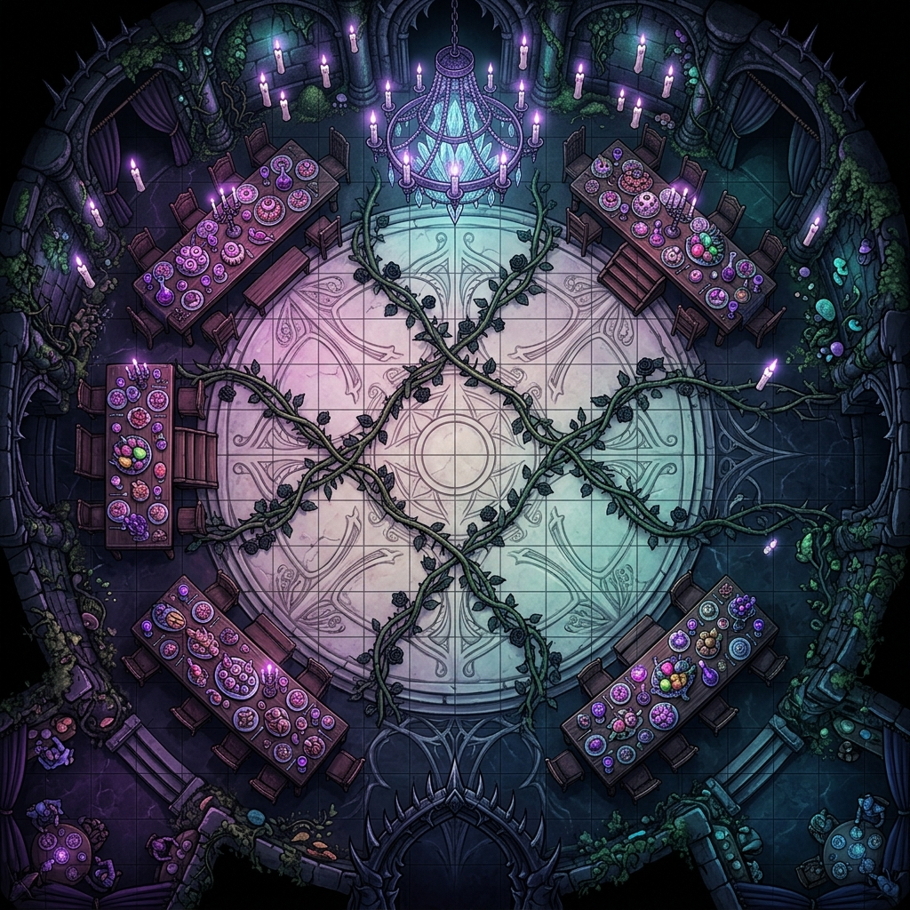
Unseelie Gala
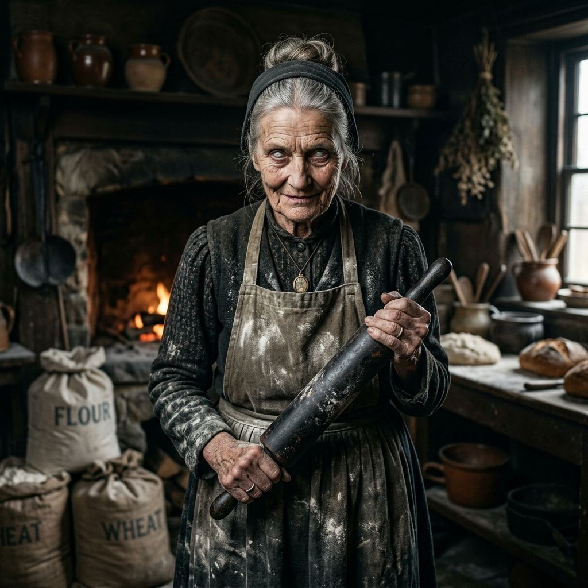
Granny Marrow
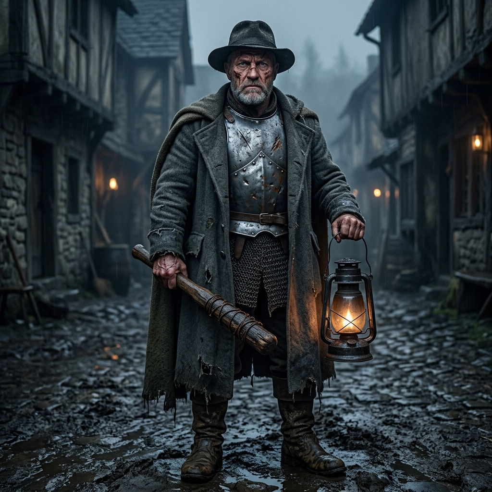
Constable Vane
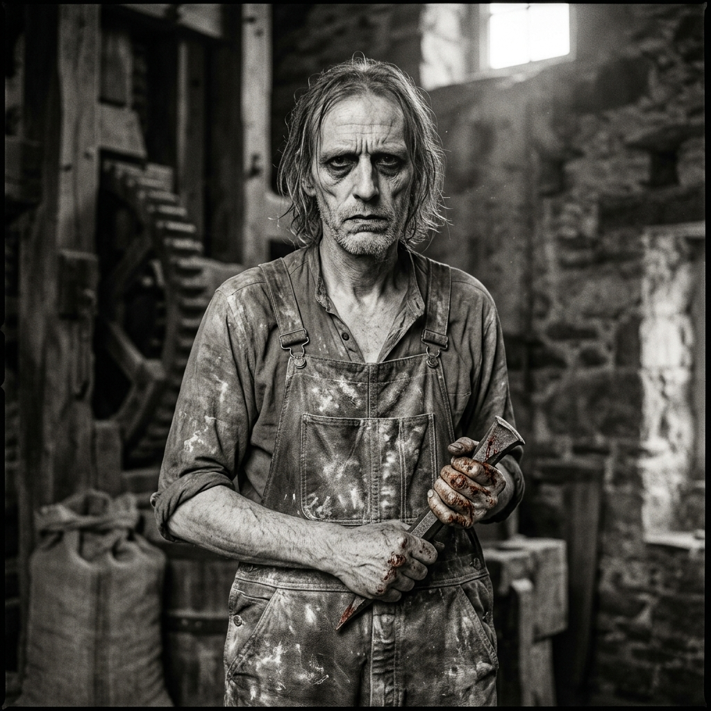
Harkon the Lean
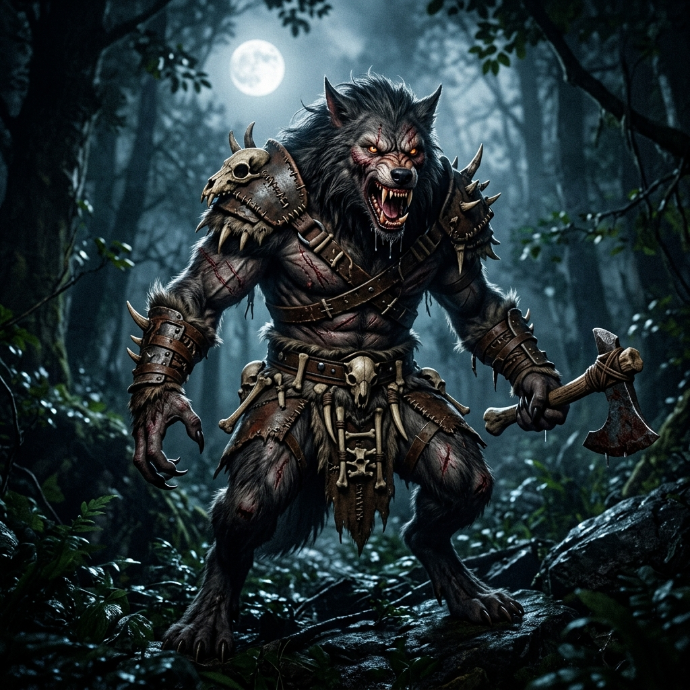
Alpha Fenris
Pledge Tiers
- The Digital Crumb ($25)
Get the complete 300+ page Master Omnibus PDF, plus all digital VTT tokens and high-resolution battlemaps.
- The VTT Master ($40)
The Master Omnibus PDF, plus the Turnkey Foundry VTT & Roll20 Compendiums. Say goodbye to prep time; every wall, dynamic lighting line, and monster stat block is pre-configured.
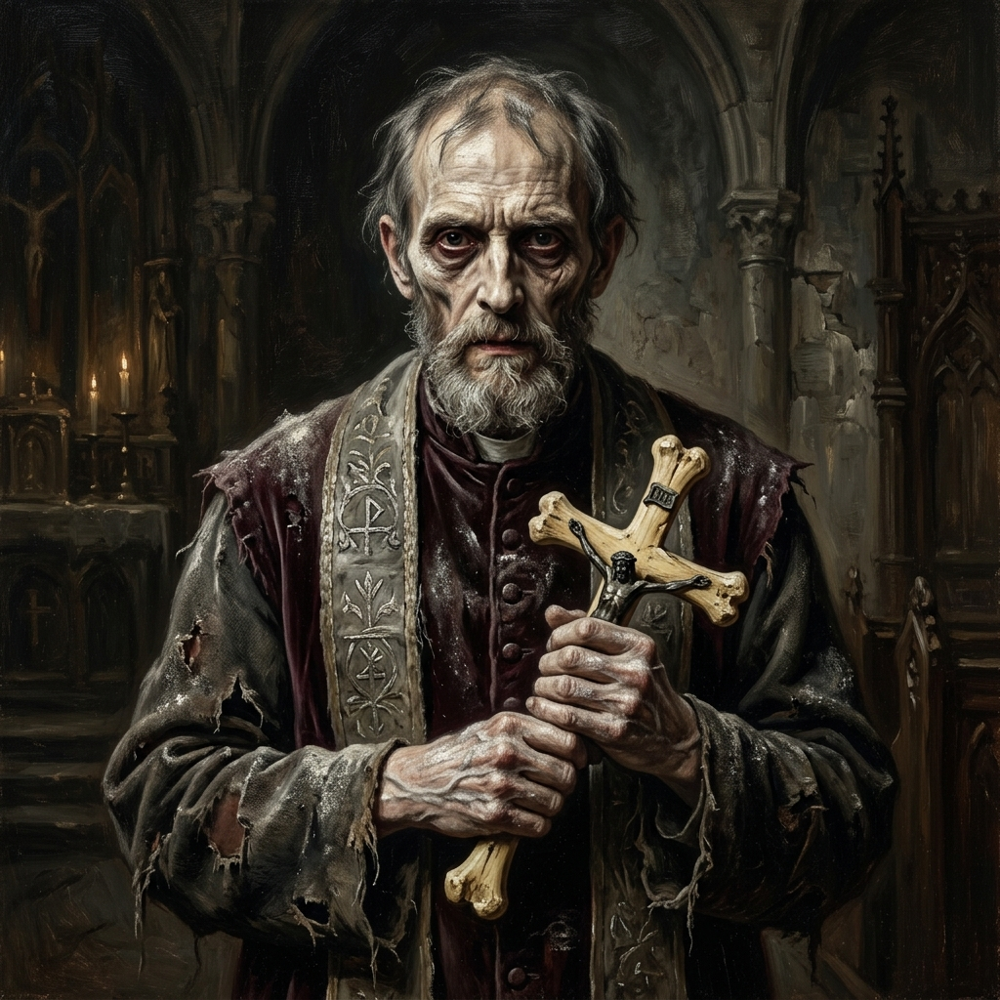
- The Hardcover & Digital Deluxe ($60)
Everything in Tier 2, plus an At-Cost Print Voucher for the physical Hardcover via DriveThruRPG. Also includes the Digital Audio Soundtrack and the Digital Tarot Deck (high-res images for VTT).
- The 3D Printer's Guild ($100)
Everything in Tier 3, plus the Sweetmeat STL Collection. Receive pre-supported, highly detailed 3D printable files for all the major bosses (Mother Gristle, Flesh-Dough Golem, Chef Q'orlax).
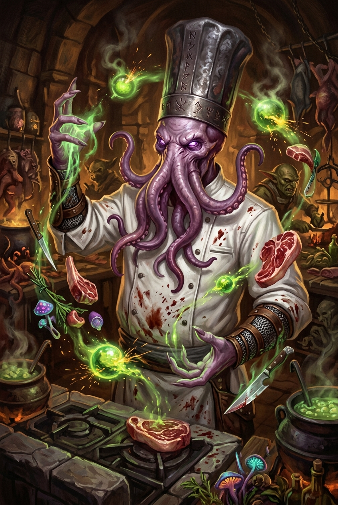
- The Matron's Coven (Limit: 25 Backers) - $500
The ultimate creator's package. Includes everything in Tier 4, plus you will work directly with the development team to design a cursed recipe, tragic ghost, or Unseelie NPC that will be officially written into the final book!
Stretch Goals
🔓 $20,000 - FUNDED!
The Sweetmeat Maw awakens. The campaign is officially funded and going to print.
🔒 $30,000 - The Zephyr Conductor's Logbook
[DIGITAL] An expanded PDF supplement adding 20 new modular train cars, 50 random planar railway encounters, and advanced vehicular combat maneuvers for the Eschaton Zephyr.
🔒 $40,000 - Animated VTT Battlemaps
[DIGITAL] We will convert the 5 massive Boss Arenas into looping .webm animated video maps for Foundry VTT and Roll20.
🔒 $50,000 - The Gourmand's Spellbook
[DIGITAL] A bonus PDF expansion adding 20 horrifying new culinary and gastromancy spells for player characters.
🔒 $75,000 - ???
To be revealed...
🔒 $100,000 - ???
To be revealed...
Shipping & Fulfillment (Print-on-Demand)
This Kickstarter is fundamentally digital-first to protect our backers from the massive risks and delays of ocean freight. If you back at the Hardcover tier, you will receive an 'At-Cost Print Voucher' via DriveThruRPG.
When the book is finished, you will receive a private link. You will pay DriveThruRPG directly for the raw cost of printing the book (estimated $12 - $15) and your local shipping. DriveThruRPG prints the book in the US or UK and mails it directly to you. This ensures you get your book months faster than traditional Kickstarter freight!
Risks and Challenges
Because we have eliminated physical manufacturing and ocean freight from our pipeline, our risks are exceptionally low. The core modules are 100% written, playtested, and edited. Our primary remaining tasks are finalizing the digital VTT configurations and composing the audio soundtrack.